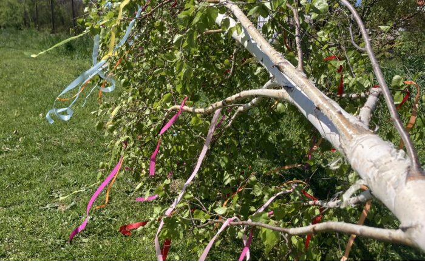

Tradície a stretnutia pod jednou strechou
Stavanie mája, súťaž vo varení guláša, Halloween párty, Deň detí či country večer so živou hudbou — u nás ožívajú sezónne tradície a susedské stretnutia. Veľký dvor, lúka, pódium a vlastná kuchyňa, 20 km od Košíc. Otvorení sme aj obciam, spolkom a združeniam.
Miesto, kde sa stretáva dedina
Stodola Staré časy nie je len priestor na rodinné oslavy — radi otvárame dvere aj väčším komunitným podujatiam. Stavanie mája, guláš fest, Halloween s vyrezávaním tekvíc či Deň detí majú u nás dostatok miesta, pódium s ozvučením a vlastnú kuchyňu, ktorá navarí pre desiatky hostí. Akcia sa vydarí za každého počasia — máme altánky aj krytú terasu.
Pozrieť naše menu
Sezónne podujatia pre celú obec
Stavanie mája
Tradičný máj, vence, harmonika a posedenie pri guláši — symbolické otvorenie jari na našom dvore.
Súťaž vo varení guláša
Kotlíky, ohne a súťažný duch. Pripravíme zázemie pre družstvá aj porotu a postaráme sa o občerstvenie pre divákov.
Halloween & tekvice
Strašidelná párty, vyrezávanie tekvíc pre deti aj dospelých a večerná zábava pri ohni a dobrom jedle.
Deň detí
Súťaže, hry na lúke, skákací hrad po dohode a palacinky — bezstarostné popoludnie pre najmenších.
Country & živá hudba
Pódium s ozvučením pre kapelu či DJ, tanečný parket a sezónne posedenia pod holým nebom.
Akcie obcí a spolkov
Priestor pre obce, spolky a združenia na vlastné podujatia — od hodov po dožinky a stretnutia členov.
Všetko pre vydarenú akciu
- Veľký dvor a priľahlá lúka pre desiatky až stovky návštevníkov
- Pódium s ozvučením pre kapelu, DJ či moderátora
- Vlastná kuchyňa — guláš, klobása, kapustnica aj palacinky
- Kotlíky a zázemie pre súťaž vo varení guláša
- Altánky a krytá terasa — akcia za každého počasia
- Dostatok parkovania priamo pri areáli
- Rodinná, srdečná atmosféra a osobný prístup
- Priestor pre obce, spolky a združenia na vlastné podujatia
Miesto pre malé aj veľké podujatia
Dvor & lúka
Otvorený priestor pre kotlíky, stánky a hry — ideálny na guláš fest či Deň detí.

Hlavná sála s pódiom
Krytá sála s pódiom, ozvučením a tanečným parketom pre kapelu či DJ.

Krytá terasa & altánky
Posedenie v suchu aj v tieni — akcia sa vydarí za každého počasia.
Odporúčané občerstvenie na akcie
Akcie u nás


{kind=link}
{kind=link}
Robili sme tu obecnú súťaž vo varení guláša a bolo to skvelé — veľký dvor, pódium aj zázemie pre kotlíky. Ľudia sa skvele zabavili a o občerstvenie bolo postarané.
Reprezentatívna recenzia — reálne hodnotenia nájdete na našom Google profile.
Čo sa pýtajú organizátori
Môže si u vás priestor prenajať obec, spolok alebo združenie?
Áno, radi otvoríme dvere obciam, spolkom aj záujmovým združeniam. Postaráme sa o priestor, pódium s ozvučením aj občerstvenie — stačí sa dohodnúť na termíne a rozsahu akcie.
Aká je kapacita pri vonkajšej akcii?
Dvor a priľahlá lúka pojmú podstatne viac ľudí než krytá sála (do 80 osôb). Pri väčších komunitných podujatiach prispôsobíme rozloženie stolov, stánkov a posedenia presne podľa vašej akcie.
Čo ak bude pršať?
Akcia sa vydarí za každého počasia. Máme krytú terasu a altánky, kam sa dá presunúť posedenie aj občerstvenie, prípadne časť programu prenesieme do hlavnej sály.
Zabezpečíte guláš a občerstvenie?
Áno. Z vlastnej kuchyne pripravíme guláš, klobásu, jaternicu, kapustnicu aj palacinky a nápoje. Pri súťaži vo varení guláša poskytneme zázemie pre družstvá a postaráme sa o občerstvenie pre divákov.
Ako sa dohodneme na termíne?
Vyplňte nezáväzný formulár alebo nám zavolajte na 0904 942 936. Ozveme sa do 24 hodín s voľnými termínmi a ponukou na mieru podľa typu a veľkosti akcie.
Pripravme spolu vašu akciu
Napíšte nám nezáväzný dopyt a ozveme sa do 24 hodín s voľnými termínmi a ponukou na mieru.